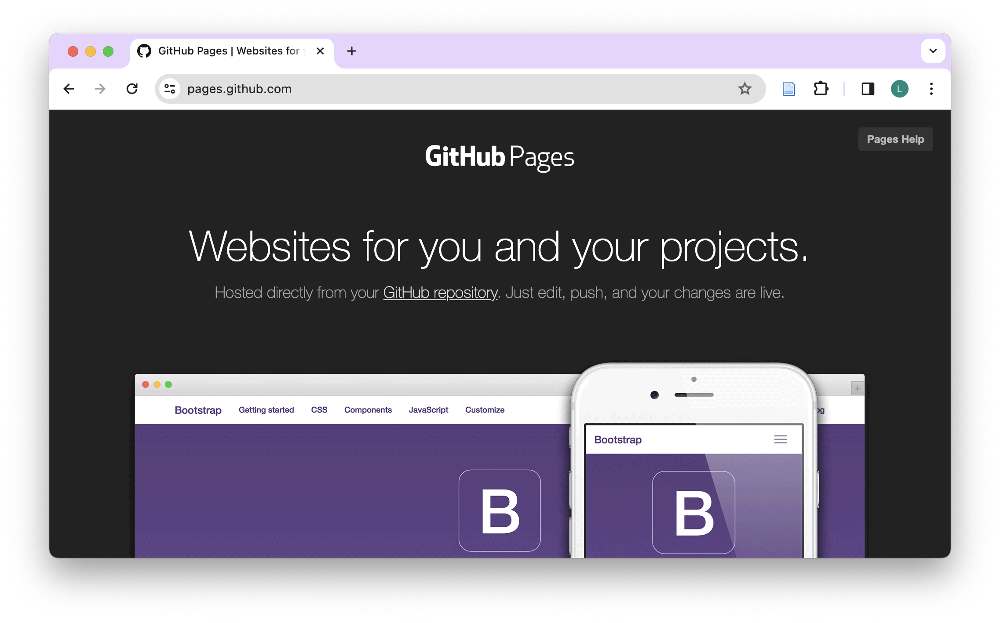

| Time | Module |
|---|---|
| 09:30 - 10:00 | Arrival |
| 10:00 - 10:30 | GitHub for Collaboration |
| 10:30 - 11:00 | Create & Clone |
| 11:00 - 11:15 | Break |
| 11:15 - 12:00 | Clone & Branch |
| 12:00 - 12:45 | Lunch Break |
| 12:45 - 13:30 | Pull Request & Merge |
| 13:30 - 13:45 | Publish |
| 13:45 - 14:00 | Wrap-up |
| 14:00 - 14:30 | Buffer |
I have no title, yet.
Git for Scientists
Lars Schöbitz
Invalid Date
Welcome!
Meet the lecturer
Lars Schöbitz

- Environmental Engineer
- Retired researcher
- RStudio certified instructor
- Data steward at ETHZ
Learning objectives
By the end of this workshop, participants will be able to:
Create and clone repositories, and explain the difference between cloning and forking a repository.
Apply the standard Git workflow using RStudio IDE—including pull, stage, commit, and push changes to GitHub.
Work with branches and pull requests by creating and managing development branches (using both RStudio and the terminal), submitting pull requests, and reviewing and commenting on others’ pull requests to facilitate code review and collaborative development.
Teaching strategy
- Teaching Git on a “need to know” basis
- Teaching only a very small subset of Git’s functionality
- Creating a safe space for learning and getting support (use Element)
- Focus on collaboration aspects of GitHub
Schedule
Your turn
Think about the last time you published a written document:
- Which tasks gave you joy?
- Which tasks were challenging or frustrating?
Take some written notes.
GitHub for Collaboration
Illustrations from the Openscapes blog GitHub for supporting, contributing, and failing safely by Allison Horst and Julia Lowndes
Illustrations from the Openscapes blog GitHub for supporting, contributing, and failing safely by Allison Horst and Julia Lowndes
Illustrations from the Openscapes blog GitHub for supporting, contributing, and failing safely by Allison Horst and Julia Lowndes
Illustrations from the Openscapes blog GitHub for supporting, contributing, and failing safely by Allison Horst and Julia Lowndes
Illustrations from the Openscapes blog GitHub for supporting, contributing, and failing safely by Allison Horst and Julia Lowndes
Illustrations from the Openscapes blog GitHub for supporting, contributing, and failing safely by Allison Horst and Julia Lowndes
Illustrations from the Openscapes blog GitHub for supporting, contributing, and failing safely by Allison Horst and Julia Lowndes
Illustrations from the Openscapes blog GitHub for supporting, contributing, and failing safely by Allison Horst and Julia Lowndes
Illustrations from the Openscapes blog GitHub for supporting, contributing, and failing safely by Allison Horst and Julia Lowndes
Read on: GitHub strategies
Openscapes Champions Lesson Series. Lowndes et al. (2024): https://openscapes.github.io/series/core-lessons/github/
Excuse Me, Do You Have a Moment to Talk About Version Control? https://peerj.com/preprints/3159/
Create & Clone
Your turn
- Open github.com
- Navigate to your profile
- When completed, place a yellow sticky note on your laptop
Now, follow along the screen and instructor.
Your turn
- Clone a GitHub repository of a fellow student (browse: github.com/username to fine the repository
website) - Open the repository in RStudio IDE
- Make a change the
README.mdfile - Save the file
- Stage, Commit & Push the changes
| id | username1 | username2 |
|---|---|---|
| 1 | Madliboom | fdaguanno |
| 2 | TillRoost | mag-wer |
| 3 | pacotvj99 | louma3000 |
| 4 | ellahenninger | CamilleFournierDL |
| 5 | dheimgartner | jineichen |
| 6 | vgeier | rjalcock |
| 7 | Jonathan-Elkobi | rainbow-train |
What happens?
Read on: Fork and clone
Take a break
Please get up and move! Leave your emails alone.
Image generated with DALL-E 3 by OpenAI
Clone & Branch
Your turn
Open the landing page for the GitHub organization ‘gitforsci-cis’: https://github.com/gitforsci-cis (try to use your bookmark)
Navigate down the page to the section “Repositories” and use the search field to find the repository called
man-washinvestments-USERNAMEwhere USERNAME is your GitHub username.Click on the repository name to open it.
Click on the green “Code” button.
Copy the HTTPS URL to your clipboard by clicking on the clipboard sign.
Open the RStudio IDE on your laptop.
Click on File > New Project in the top menu bar
Click on Version Control.
Click on Git.
Click on Browse… button.
Use the folder structure you created in the pre-course work (e.g.
~/Documents/gitrepos/gh-org-gitforsci-cis)Paste the HTTPS URL from GitHub into the “Repository URL” field.
Click on the “Create Project” button.
Find the Files tab in the bottom right pane of RStudio.
Place the yellow sticky note on your laptop when you have completed the task.
Pull Request & Merge
Our turn
- We will continue together with
man-washinvestments-USERNAMEwhere USERNAME is your GitHub
Publish
Our turn
- We will continue together with
man-washinvestments-USERNAMEwhere USERNAME is your GitHub
GitHub Pages
- GitHub Pages is a free service for hosting static websites. It is ideal for blogs, course or project websites, books, presentations, and personal hobby sites.

Minimal Example - Requirements
- Landing site needs to be stored as
index.qmd - The
index.qmdneeds to be stored indocsfolder - Example works well for a report/article as a stand-alone page
- Quarto provides a framework and examples for more complex websites: https://quarto.org/docs/websites/
Quarto websites
- Websites are essentially
format: html+ a Quarto Project - But a website is different than
format: htmlin that it has multiple pages - Websites can be your first exploration into Quarto Projects
- Websites and books are very similar in that they associate multiple pages/resources into a connected resource
Learn more
Wrap-up
Wrap-up
- Post your collected questions in the Element channel
- Start your first project using Git & GitHub (already have a project? Read here)
- Keep learning by doing (create PRs to yourself)
- Share your knowledge with others (help them get started)
Thanks!
Slides created via revealjs and Quarto: https://quarto.org/docs/presentations/revealjs/
Access slides as PDF on GitHub
All material is licensed under Creative Commons Attribution Share Alike 4.0 International.
References
Lowndes, Julia Stewart, Stefanie Butland, and Erin Robinson. 2024. Openscapes/Series: Openscapes Lesson Series V2024.11.0. Version v2024.12.0. Zenodo. https://doi.org/10.5281/zenodo.14428503.